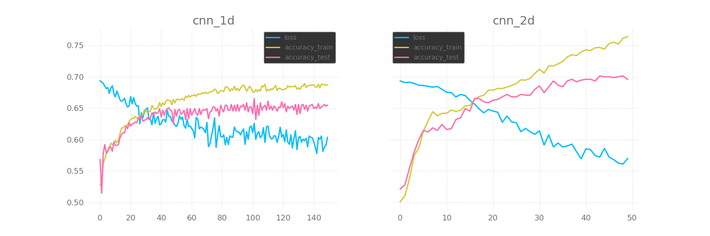

Classificação 2: CNN
Nota
os códigos estão aqui: https://github.com/demacdolincoln/test-sentiment_analysis
Como falado anteriormente <link://filename/posts/classificacao-1.rst>_, classificar um texto é algo que vai além do vocabulário ainda que a gente utilize o word2vec ou o glove, e como a ordem das palavras importa muito, vamos dar aqui o 1º passo neste sentido, vamos ver como funciona uma rede neural convolucional (CNN) aplicada à classificação de textos.
Habitualmente elas são usadas essencialmente em processamento de imagens, no caso o que teremos é uma linha representando cada palavra e as colunas representando um ponto no hiperplano de acordo com a veotrização treinada. A idéia por trás da convolução aqui aplicada é bastante simples: ter uma matriz maior e calcular uma matriz menor equivalente, neste processo há perda de dados e portanto é irreversível, porém tem se demonstrado muito útil em muitos casos.
Implementação:
O primeiro passo é transformar um texto numa matriz, para isso vamos recordar o que temos:
- texto ~> sequência de ids de palavras
- skip-gram, cbow, glove, etc. ~> representação cartesiana de palavras segundo o sentido compreendido pelo seu uso
Diante disso se torna meio lógico fazer uma matriz no formato words x embedding dims.
Um dos problemas dessa abordagem é que frases tem tamanhos variáveis enquanto a matriz de entrada na camada convolucional da CNN precisa ter tamanho fixo, então temos de lidar sempre com o pior caso, frases grandes, e preencher o espaço restante das frases menores com zeros, isso acaba nos obrigando a ter um custo computacional extra já que teremos muitos espaços em branco só para que sempre tenhamos matrizes do mesmo tamanho.
Antes de continuar preciso fazer algumas observações:
- Não encontrei um dataset em PTBR bom o suficiente, portanto, contrariando minha proposta inicial, o ciclo de anotações sobre classificação usará um dataset em inglês.
- Tentei baixar um word embedding já treinado com o vocabulário da língua inglesa, mas ele tinha mais de 6Gb, como esse fato ia complicar algumas coisas a nível operacional, diminuindo minha proposta de fazer as anotações da forma mais simples possível, preferi usar o Gensim para calcular o skip-gram estrito ao dataset.
Primeiros passos:
- Baixar o dataset: link
- E o de sempre conforme mostrado em Word2vec 1: introdução
Sobre o tamanho das dimensões no word2vec: como neste caso precisamos de uma matriz quadrada, precisamos que a quantidade de dimensões seja a mesma do maior texto depois do processo de limpeza.
Após isso ser feito podemos montar as matrizes:
def make_matrix(phrase, model_vec, n, stop_words): if type(phrase) is str: phrase = gensim.utils.simple_preprocess(phrase) phrase = [i for i in phrase if i not in stop_words] out = np.zeros((n, n)) for i, label in enumerate(phrase): if label in model_vec.wv.vocab.keys(): out[i, :] = model_vec[label] return out class Data(Dataset): def __init__(self, data, target, model, n, stop_words): self.n = n self.data = torch.FloatTensor( [make_matrix(i, model, n, stop_words) for i in data] ) self.target = torch.LongTensor([int(i) for i in target]) self._len = len(target) def __getitem__(self, x): return self.data[x].view(1, self.n, self.n), self.target[x] def __len__(self): return self._len
Para facilitar a divisão do dataset para uma valização cruzada, usei o sklearn bem pontualmente:
train_data, test_data, train_target, test_target = train_test_split(corpus, target, test_size=0.25) data_train = Data(train_data, train_target, skip_gram, max_sentence, stopw) data_test = Data(test_data, test_target, skip_gram, max_sentence, stopw)
Modelo de rede neural:
A rede neural será uma rede convolucional bem padrão:
class CNN_2D(nn.Module): def __init__(self, lin_in, lin_out): super(CNN, self).__init__() self.conv0 = nn.Sequential( nn.Conv2d(1, 16, 5, stride=2), nn.ReLU(), nn.MaxPool2d(kernel_size=2) ) self.conv1 = nn.Sequential( nn.Conv2d(16, 32, 5, stride=3), nn.ReLU(), nn.MaxPool2d(kernel_size=2) ) self.linear = nn.Linear(lin_in, lin_out) def forward(self, x): x = self.conv0(x) x = self.conv1(x) x = x.view(x.shape[0], -1) x = torch.sigmoid(self.linear(x)) return x
Para entender melhor como a convolução funciona neste contexto, recomendo os vídeos: * video1 * video2
Uma vantagem da convolução 2d (com uma matriz e não com um array) é uma maior propagação de informação sobre áreas tomadas pelos zeros, se formos imaginar o processo num array logo percebemos um espaço muito limitado de propagação das informações finais apenas. Para expor melhor as diferenças óbvias em se trabalhar com 1 e com 2 dimensões, também repeti o experimento com uma rede convolucional 1d, ela apresenta pouquíssimas diferenças: menores dimensões no skip-gram (apenas 10), 3 camadas lineares na rede neural, maior quantidade de épocas no treinamento. Em todos os casos resolvi usar uma função sigmoide na saída, isso para ter uma estimativa de "certeza" quanto às escolhas da rede neural após o treinamento, mas deixarei essa análise comparativa para o último post desse ciclo.
class CNN_1D(nn.Module): def __init__(self, lin_in, lin_out): super(CNN, self).__init__() self.conv = nn.Sequential( nn.Conv1d(1, 16, 5, stride=2), nn.ReLU(), nn.MaxPool2d(kernel_size=5) ) self.dropout = nn.Dropout(p=0.2) self.linear0 = nn.Linear(lin_in, int(lin_in*2)) self.linear1 = nn.Linear(int(lin_in*2), int(lin_in/2)) self.linear2 = nn.Linear(int(lin_in/2), lin_out) def forward(self, x): x = self.conv(x) x = x.view(x.shape[0], -1) x = self.linear0(x) x = self.dropout(x) x = self.linear1(x) x = torch.sigmoid(self.linear2(x)) return x
Como acho a idéia aqui não ficou tão clara, antes de continuar, vou apenas ressaltar dimensões de entrada para cada rede neural:
-
Conv2d:
- altura: tamanho máximo de palavras
- largura: tamanho máximo de palavras
- word embedding dims: tamanho máximo de palavras
- a matriz será: palavras x word embedding
-
Conv1d:
- tamanho: tamanho máximo de palavras * word embedding dims
- word embedding dims: qualquer tamanho que queira, no caso eu escolhi 10
- o array será: dimensões de cada palavra lida na ordem colocada uma após a outra num array
Treinamento:
Como pretendo fazer um post final de análise dos resultados, usei o ignite para organizar a criação de um csv e salvar a rede neural ao final do treinamento, não entrarei em muitos detalhes mas basta ver o notebook usado que (ao menos espero) fique bem clara a utilidade.
Em todos os experimentos, para as comparações serem mais justas, usarei essencialmente os mesmos parâmetros:
- loss function: Cross Entropy
- Optimizer: Adam
- learning rate: 0.001
Apesar de ser um dataset muito pequeno, com apenas 3000 textos no total e invariavelmente fadado ao overfitting justamente por causa disso, a rede convolucional 2d funcionou muito melhor que a 1d como os gráficos abaixo claramente demonstram:
resultado final:
Na próxima anotação será a vez de tratar de redes recorrentes, serão no total 3 redes neurais (1 na próxima anotação e 2 na seguinte), inicialmente lidando apenas com a recorrência comparando o desempenho do GRU e LSTM e posteriormente combinado a recorrência com a convolução, mas para adiantar as coisas recomendo começar a ler a respeito do LSTM e GRU.
---
Comentários
Comments powered by Disqus